file://. Para ver todo (tablas dinámicas,
3D, PDFs), serví la carpeta con: python3 -m http.server 8000
desde la carpeta del proyecto y abrí http://localhost:8000
(o doble clic en visor.command).
Resumen
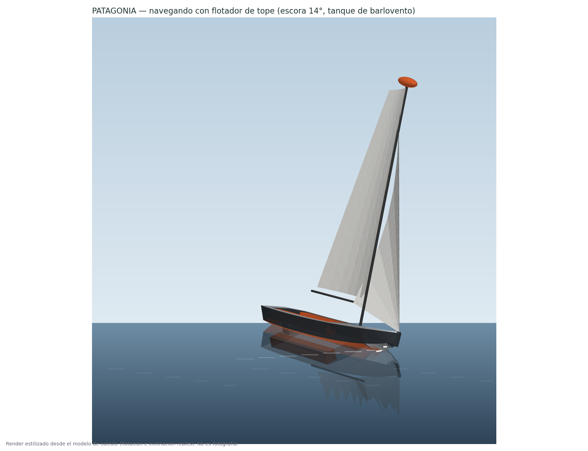
QUILLA ARRIBA = SOLO BOTADURA / PLAYA
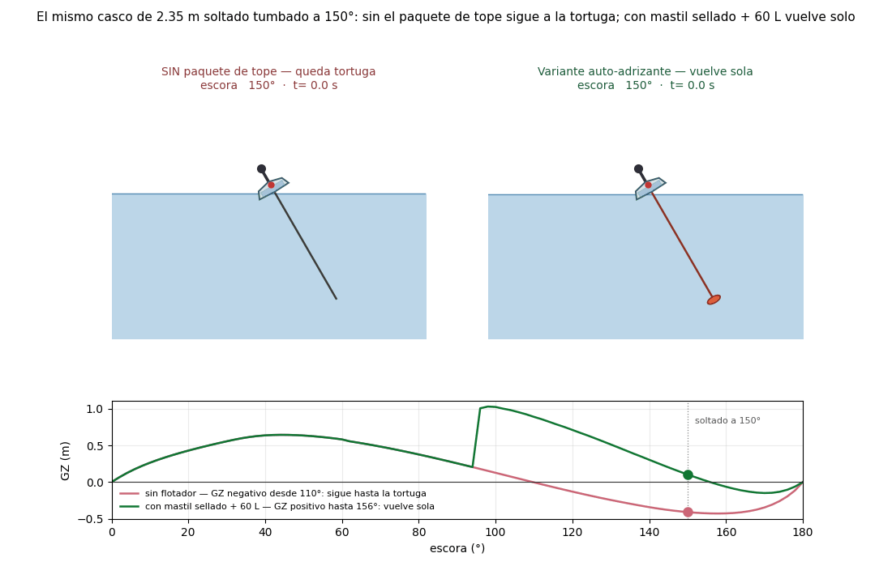
La variante auto-adrizante
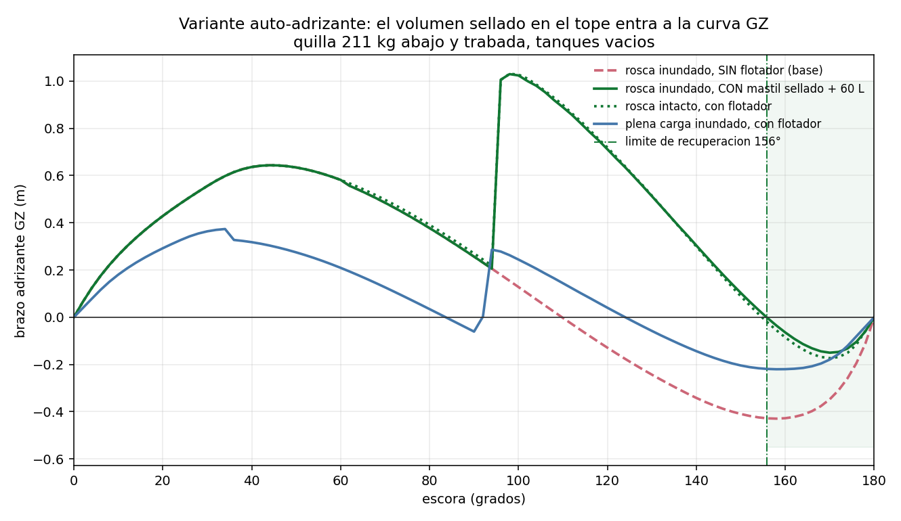
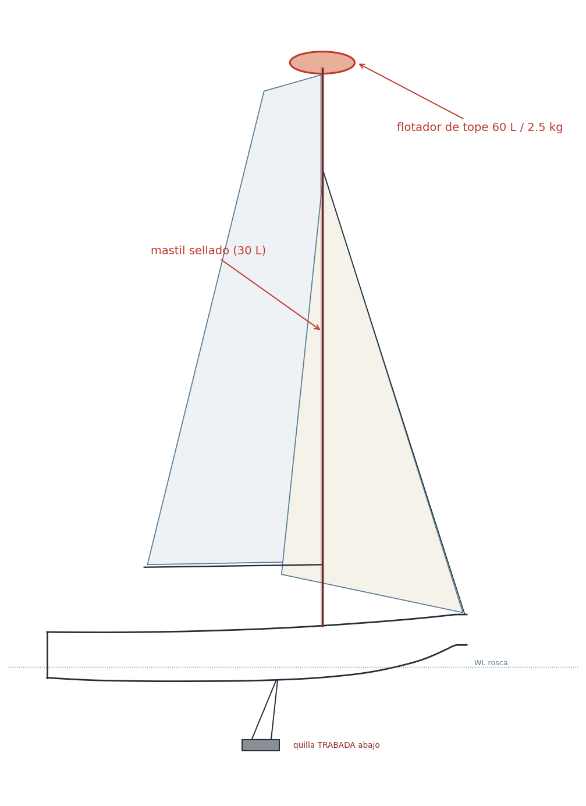
Qué cambia vs. el proyecto base
cargando cambios.md…
Opciones de auto-adrizado estudiadas
Ocho configuraciones medidas con la misma física (rosca, cockpit inundado,
quilla abajo y trabada). Tabla generada en vivo desde opciones.json.
| Opción | Vuelve solo hasta | Tortuga residual | GZ máx | ¿180.0° literal? | |
|---|---|---|---|---|---|
| cargando opciones.json… | |||||
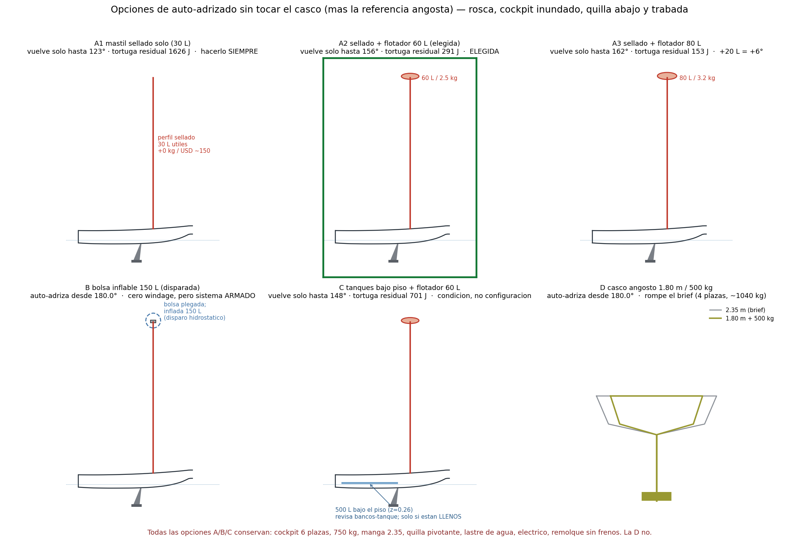
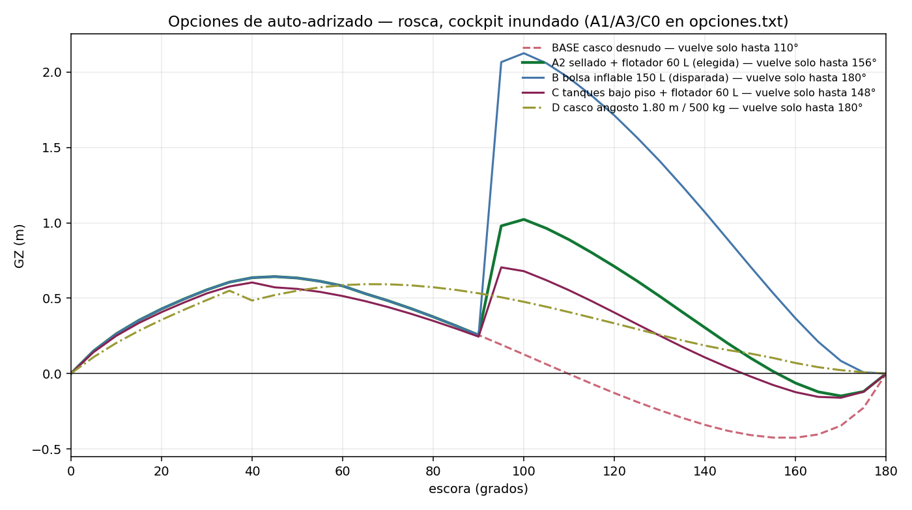
Modelo 3D interactivo
El visor muestra el modelo completo por capas — las mismas del archivo Rhino — con un interruptor por capa (casco, bancos-tanque, quilla, timón, aparejo, velas, flotador, flotaciones, secciones). Archivo fuente: boat_autoadrizante.3dm · malla del casco: hull_autoadrizante.stl
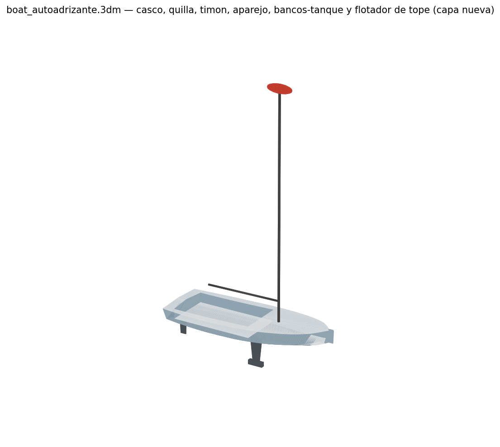
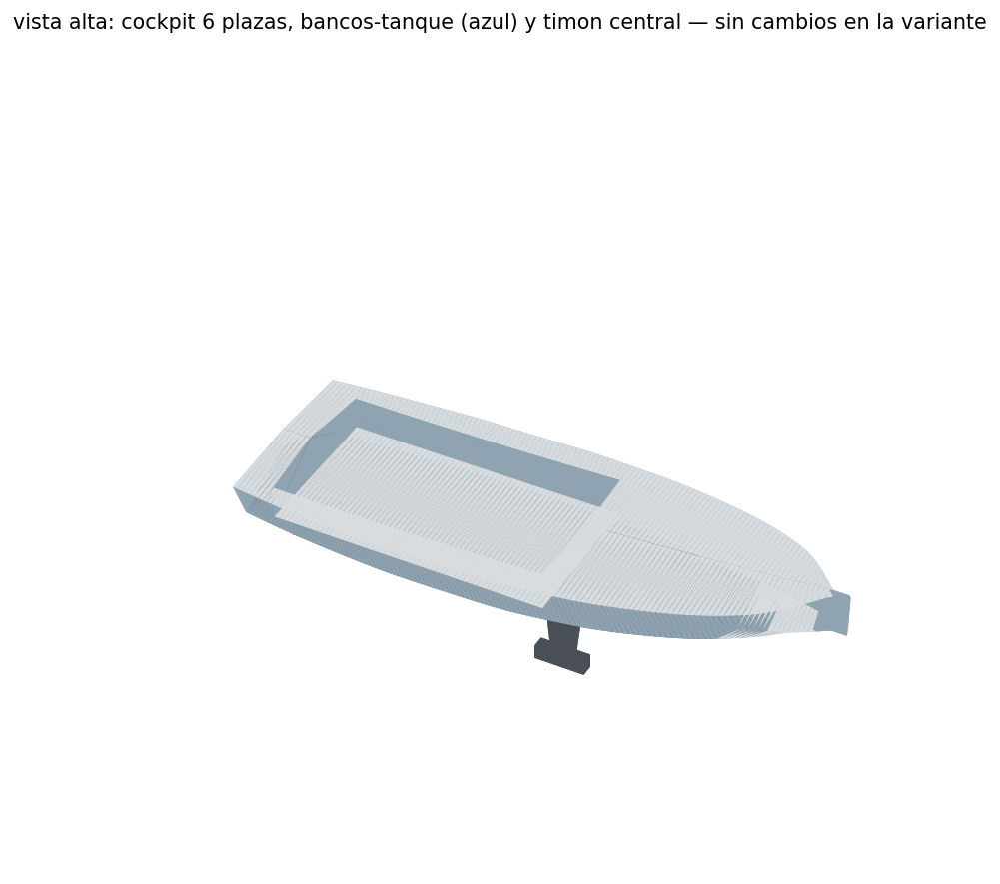
Planos de construcción (8 láminas A3)
L1 disposición general · L2 formas · L3 sección maestra · L4 quilla · L5 espejo y timón · L6 plano vélico · L7 lastre de agua · L8 flotador de tope y condición de diseño. Cotas en metros. Preliminar — sujeto a revisión de ingeniero naval.
Descargar planos.pdf · tabla de puntos para loftear: offsets_autoadrizante.txt · plano de líneas: hull_lines.png
Diseño y colores
En HDPE el color va en la resina (se decide al moldear, no se pinta) y es pasante: los rayones no se notan. Regla técnica: cubierta y bancos siempre claros; el flotador va en el color de acento — un elemento de seguridad se lleva a la vista.
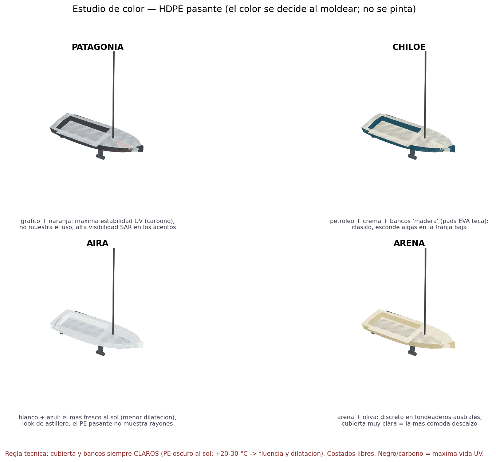
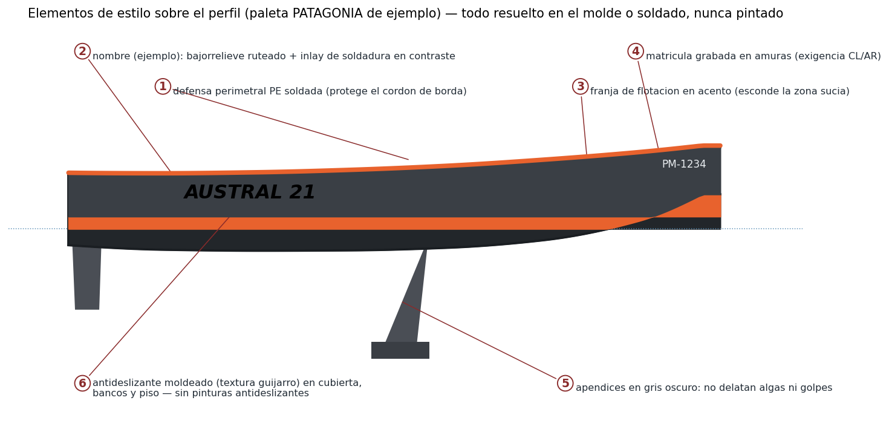
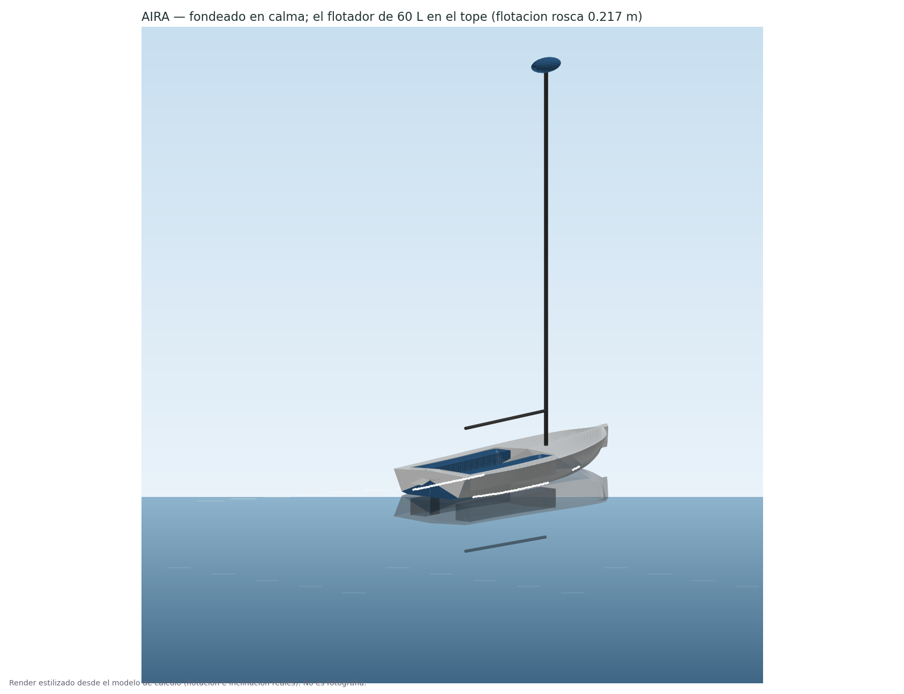
Documentos y PDFs
Presentación completa (incluye la comparación de opciones, sección 4)
Especificación de la variante
cargando specs.md…
Datos crudos del modelo
report.txt — corrida completa de la variante
…
audit.txt — 22 verificaciones de constructibilidad
…
costs.txt — costos con el delta de la variante
…
opciones.txt — exploración de opciones completa
…